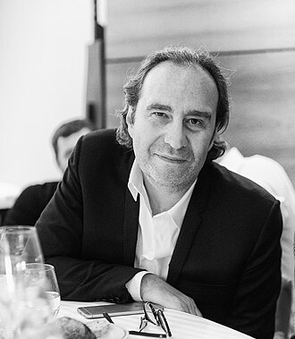

XAVIER NIEL · Fondateur Iliad (Free) · Station F · 42
Q1450891 · 99.6%
WIKIDATA OSINT : IG @xavier75016 · X @xavier75 · LI in/xavier-niel-7661aa43
Fondateur et actionnaire principal d'Iliad (Free), co-actionnaire du groupe Le Monde, fondateur de l'école 42, de Station F et co-fondateur de Kyutai.